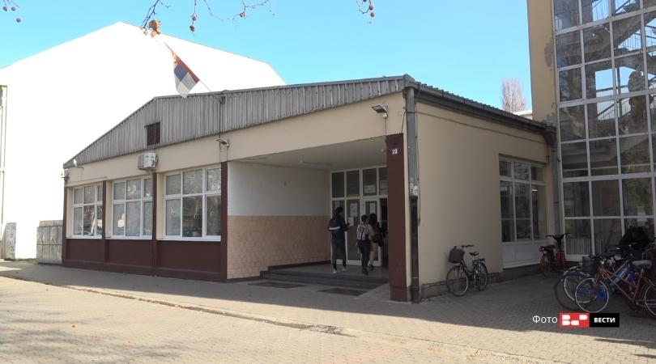

Ime i prezime: Strahinja Kecman
Odeljenje: III3
Adresa: Pere Kecmana 4, Čelarevo
Telefon: 063 822 4787
Osnovno: OŠ "Zdravko Čelar"
Klikom na sliku vas vodi na sajt skole:
Srednje: Gimnazija "20.oktobar"
Klikom na sliku vas vodi na sajt gimnazije:
Buduće: Turistički fakultet
Bačka Palanka je gradsko naselje u Srbiji u opštini Bačka Palanka u Južnobačkom okrugu. Prema popisu iz 2011. bilo je 28239 stanovnika.
Površina: 579 km2